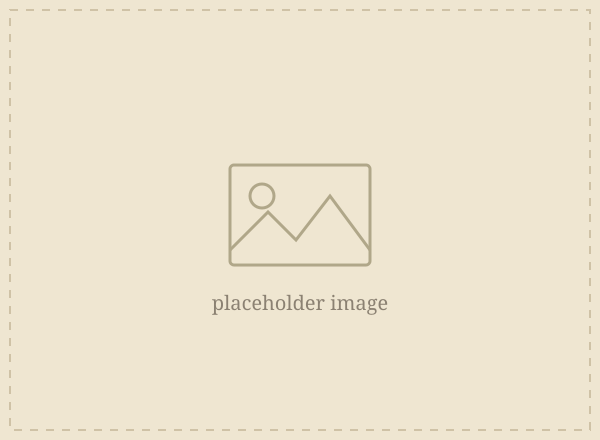
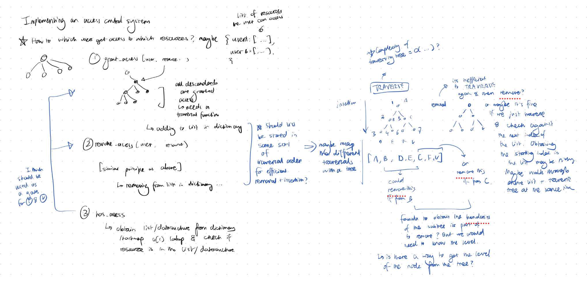

διάνοια: from διά (through) + νοῦς (mind): to think something through, step by step.
In Plato's Republic, dianoia is the mode of the geometers. Reasoning that leans on visible diagrams to reach invisible truths. It is, quite literally, thinking with scratch work.
Hence, dianoia is a browser whiteboard you can draw on with a stylus, with an AI observer watching the scratch work evolve.
